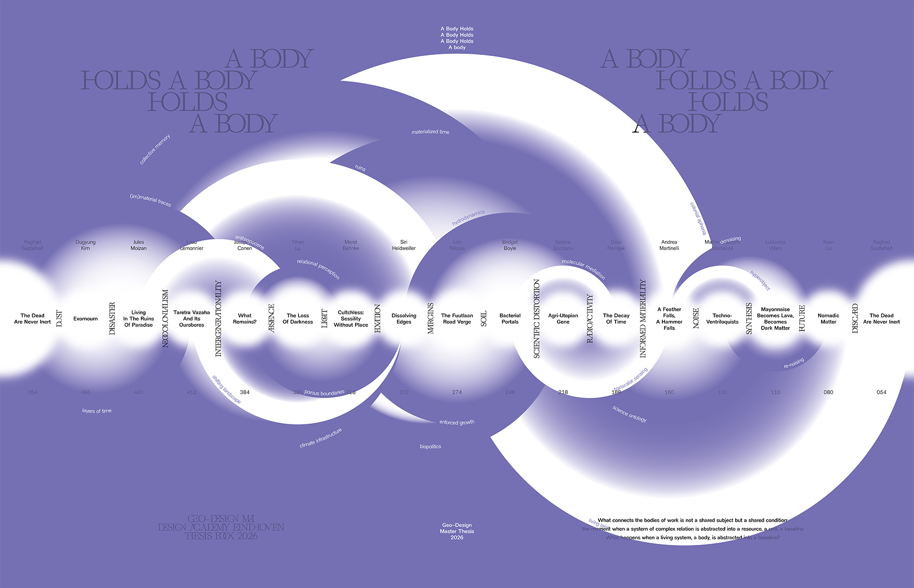
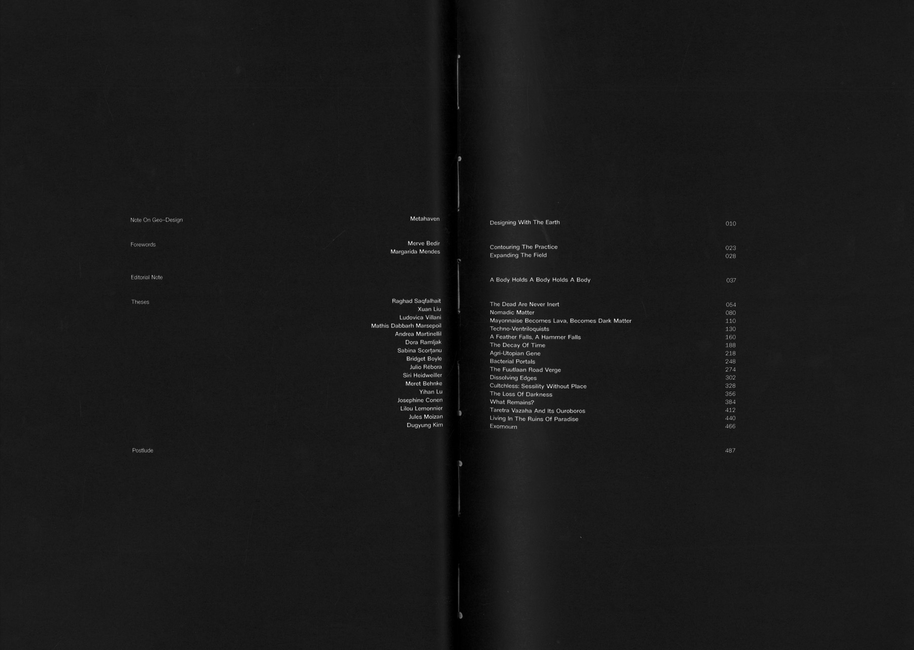
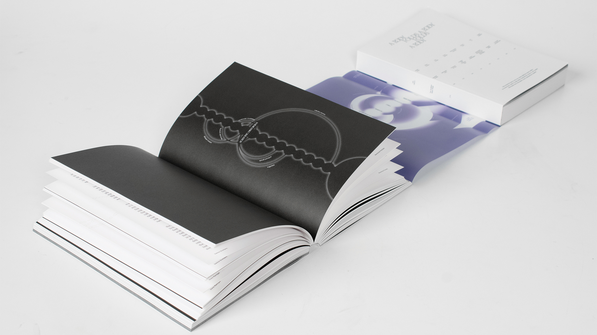
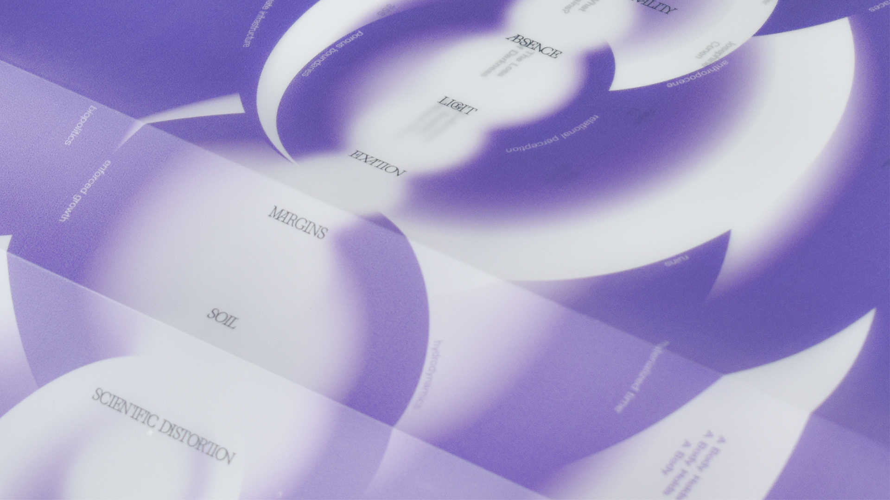

Abstract
What connects the bodies of work in this book is not a shared subject but a shared condition: the moment when a system of complex relation is abstracted into a resource, a unit, a baseline.
What happens when a living system, a body, is abstracted into a baseline?
Editorial note
A Body Holds A Body Holds A Body holds the entangled urgencies of sixteen graduating Geo—Design students at a moment when the systems we inhabit—ecological, political, institutional—are under increasing pressure. The frameworks through which we have understood stability, governance, and sovereignty are being tested, contested, and in many cases, dismantled. This book occupies the fissures that these systemic ruptures have opened up and the traces they left behind. It untangles their complexity across scales of time and space through the lens of living systems.
Drawing from ecological thinking, the book considers ecological, social, and institutional systems as interconnected structures organized across nested scales. These systems interact through adaptive cycles of growth, conservation, crisis, release, and reorganization—they are living systems. What happens when a living system is abstracted into a baseline? The bodies of work this book holds, and is held by with its wrap, takes sixteen distinct journeys to explore this question, pausing briefly between each to co-reflect on their unfolding.
The sixteen theses move across vastly different scales and sites—soil bacteria beneath a post-industrial city, bird dialects eroding between Gibraltar and the Atlas Mountains, a plant imported to Madagascar carrying traces of colonial displacement, rare earth minerals at the center of geopolitical fiction, radioactive isotopes decaying in oceanic currents and political afterlives, the genetic mutation of sunflowers engineering plant sex for oil production. What connects the bodies of work is not a shared subject but a shared condition: the moment when a system of complex relations is abstracted into a resource, a unit, a baseline.
A landscape defined by tidal movement, engineered into enclosure over centuries, finds its way back. A road verge at the margins of a city, written off by redevelopment logic, becomes a site of collective regeneration. Ruins of ecological disasters expose capitalist fantasies of paradise. Interconnected bodies emerge, absorb, and reorganize; revealing hierarchy of scale, but not hierarchy of value. The questions each thesis asks, in its own register, is what gets lost in abstraction—and what might still be recovered through rigorous design and research.
Three elements structure the publication: interglossary, interglossary spread, and trace. The interglossary is a set of spacious words and concepts that connect each pair of the sixteen theses together. These words form the relational order in which the theses appear, providing the starting point for a conversation that unfolds between the two authors in the interglossary spreads. Writing here is not a solitary act but a vessel for co-reflection.
Throughout each thesis, interglossary words transform as they pass through the specific materials, questions, and histories of each work. Dust becomes ash. Ash becomes archaeology. A trace line marks these moments of transformation, linking each occurrence back to its conceptual node and folding the collective back into the individual.
Footnotes are woven into the body of each thesis as they mark solidarity with those who have walked through similar terrains. Certain elements within images are subtly highlighted—textures, objects, surfaces that might otherwise recede. The small hole in an oyster shell marking an ecological relation. The mineral surface of ash, information-dense beneath its featureless appearance. What becomes visible at this scale—the trace, the residue, the barely-there—is precisely what weaves the bodies of work together. Not the grandiose complexity of a structure, but the fine, granular relations running through it.
Across these pages, certain questions emerge with immediacy. What does responsibility look like when a disaster spans generations? What does darkness—reduced, engineered out of urban life—still hold for both human and non-human rhythms? What does a gravitational wave detected at the threshold of human perception do to our understanding of scale itself? At what point does a simulation cease to represent the world and begin producing it? Each thesis locates a moment of abstraction and asks what was lost, who decided, and whether another relation is still possible. Taken together, they propose that thinking through scales is not a methodological preference, but a form of responsibility.



